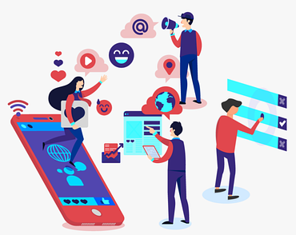

My Main Tasks:
I was on the front lines supporting faculty and students with their daily issues. I had to learn about the whole system of support the University of Guelph has for helping people. The CCS IT Help Centre is the first place people go for help, but we have to know what team helps who as we pass a lot of inquiries onto different teams.
My job consisted of mainly remote work with the odd shift working in person. When I was remote, my main tasks were answering people through email using the Footprints software, helping people through Click 4 Chat on our main website, and taking calls. When I was in person, I would still answer emails but mainly help people face to face.
FootPrints:
When I was first learning how to use the Footprints software to answer emails I had to make a lot of notes on what teams support who, and different resources I would use to help people. After a little bit of time, I became proficient with Footprints and was able to answer any question without referring to my notes which made me a lot faster at answering and passing on emails.
Click 4 Chat & Calls:
Supporting people through Click 4 Chat and over the phone was sometimes a challenge. For technical issues, you have to be able to help people without looking at their screen. I quickly became good at asking the right questions to figure out exactly what the problem was and explaining the solution in an easily understood response. Over time, I also built up an array of responses that I would use for general questions so that I could answer the person very quickly and give them exactly what they need.
Working in Person:
My favourite part of the job was helping people face to face. It was much easier as I could see the screen of the person I was helping. With Covid-19 I was not allowed to touch the clients device, but I could walk them through the issue. People would come with more difficult questions but there were a couple people at the help desk so we could all help troubleshoot the tough questions.
Technology Literacy
This goal was to become proficient with Footprints in the first 4 months. To track this goal, I kept a log of 5+ key learnings from each week. I monitored the progress by comparing my takeaways and seeing if they became more in-depth.
This was a great habit to develop as it accelerated my learning on the job. After the first 4 months I was very comfortable using footprints and the number of takeaways slowly decreased.
Problem Solving

This goal was to become more effective at problem solving while assisting staff and students both over the phone and in Click4Chat. To track this goal, I recorded the number of problems that I resolved weekly and compared my results over the 8 months. As expected, the number of completed issues went up and then plateaued as I was able to answer almost every question people had.
Verbal Communication

This goal was to improve my communication skills as it was a very important part of working at the CCS Help Centre. I accomplished this by always volunteering to answer calls and paying close attention to what I would say. I would keep track of when I would say filler words and after time the number went down. I would also pay close attention to when my coworkers would help clients and if I liked how they answered questions I would implement some of what they would say.
Leadership
This goal was to increase my leadership skills. This goal was a lot easier to work on when I would work in person with a team. To accomplish this goal, I would always talk through the issues that I would have or if I noticed other people were having issues I would share my thoughts. In the second 4 months of working I started working with part-time workers who haven’t worked in awhile so I would fill them in on any new software or updates that we had.
Resourcefulness

This goal was to become more resourceful when solving problems. To accomplish this goal, I would track the number of times I had to ask my supervisor for help when supporting someone over the phone or click4chat. This pushed me to find my own solutions and do my absolute best to solve an issue before asking for help.
Written Communication

This goal was to become more effective when answering people through email or click4chat. To accomplish this goal, I would copy and paste some of my general responses into a document so that later I could pull notes from previous responses. In my down time, I would edit my responses so that the next time they would be even more clear. Some people struggle with technology and I wanted my response to be so bulletproof that everyone could follow my steps.